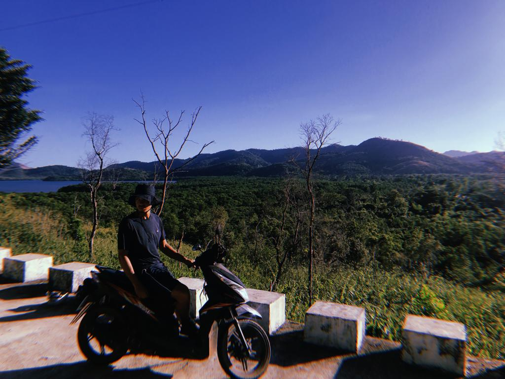

When in El Nido, island hopping is a definite must-do, the tours are split into four catorgories: Tour A, B, C and D. All the tours are fantastic, I reccomend doing your research into which itinerary you are interested in the most. I opted for tour A which includes the Big Lagoon,Small Lagoon, Secret Lagoon, Shimizu Island and 7 commando beach. The tours are shared with around 15 others and includes a fresh lunch of grilled fish, rice, salad and fruit. Most of the tours offer kayak hire, and for Tour A we used them to travel through the
Big and Small Lagoon's. You can also hire snorkles to look at the colourful fishes at 7 Commando Beach. The tours are good value for money and there are plenty of opportunities to take some wonderful photos.
Marimegmeg Beach
2. Corong Corong Beach & Marimegmeg Beach
Corong Corong Beach and Marimegmeg Beach are both lovely places to go in the evening, with places to eat and watch the sunset with incredible views of Bacuit Bay. Mainland El Nido beach's aren't quite as pristine as the Calamian Islands shores's in comparison, but are non-the-less a serene place to relax. Of the two, Marimegmeg Beach is definetely my favorite with plenty of beach bars and music reminding me of the Phi Phi Islands in Thailand. You can get a tricycle to these beaches if you are staying in El Nido town or futher away, but I reccomend hiring a motorbike.
Pass Island
3. Coron Island
If you travel to El Nido, you have to stay in Coron Island for a couple days. There are 2 daily ferries from El Nido to Coron, one takes 6 hours and the other 3-4. Just like El Nido, Coron offers island hopping tours, but are in my opinion, better. Tour A took us to Kayangan Lake,Twin Lagoon and the Coral Garden. Seeing the rainbow of fish in the Coral Garden and swimming in the cleanest lake in Asia was incredible. Tour D took us to the Lusong Gunboat and Pass Island. The Lusong Gunboat is one of the twelve World War II Japanese supply Ships, now they are covered with colourful coral and home to thousands of fishes. Pass Island is the most picturesque island i have ever seen and was my highlight of the whole trip. Coron has far less beaches than El Nido, but it does have Ocam Ocam Beach which is a 3 hour motorbike ride from Coron Town.

Busuanga
4. Hire a Motorbike
The most efficient and affordable way of getting around El Nido and Coron is by motorbike. There are loads of motorbike rental shops in El Nido and Coron town. You can ride to Napcan Beach from El Nido which is a lovely beach with massive waves aswell as Corong Corong Beach and Marimegmeg Beach as mentioned. Although we didnt, you could also ride to Verde Safari Beach and Duli Beach after Napcan. In Coron, you can ride to Busuanga (where Ocam Ocam Beach and Conception Falls are loacted) and the hot springs.
5. Hire a Kayak
If you're up for a challenge and want a cheap day out on some beautiful beaches, I highly reccomend hiring a kayak. You can hire one easily near El Nido port (where the island hopping tours depart) and you'll spot them along the beach. Using the kayak was definitely hard work (luckily I had my boyfriend there) but 100% worth it. You can kayak to Paradise Beach which you can see from El Nido town, it is a gorgeous quiet beach with swings tied to trees. There are several other bays you can kayak to including other bays on Cadlao Island, each with its own stray dogs.